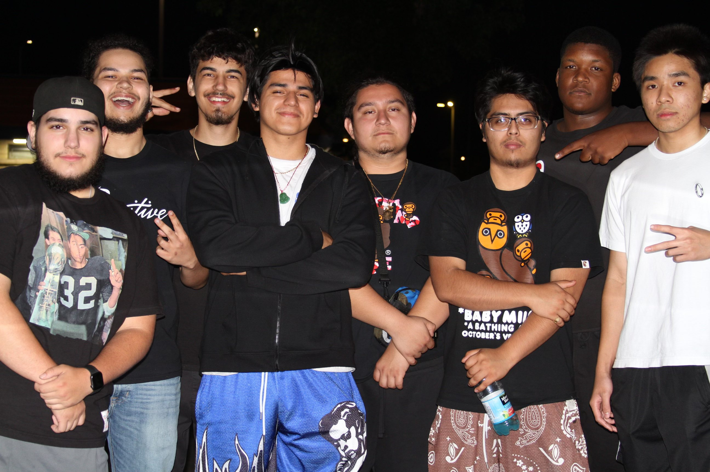
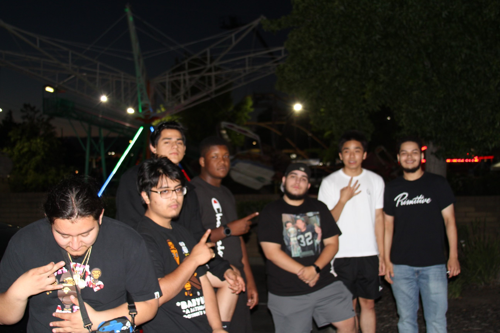

Welcome to my about me page! My name is Kenny Le and I am an undergraduate majoring in Computer Science. Here is a closer look at my interests and life outside of school!
My favorite sport is basketball! Basketball has always been a fun past time that helps me stay active while allowing me to spend quality time with friends. Growing up, I was surrounded by basketball. During recess, everyone would rush to the basketball courts and play pick-up. When I got home, I would catch my dad watching the nightly NBA games on ESPN or ABC. Basketball was a fun way for me to bond with my friends and family. Although I only play it on a casual level, I still thoroughly enjoy it because it lets me express my creative side by giving me the freedom to do whatever I want to do on the court. Football and weight lifting are also two other activities that I enjoy in my free time.
I grew up in North Highlands, Sacramento, which is a diverse part of Sacramento. Here are some pictures of me and my friends that I grew up with!
 